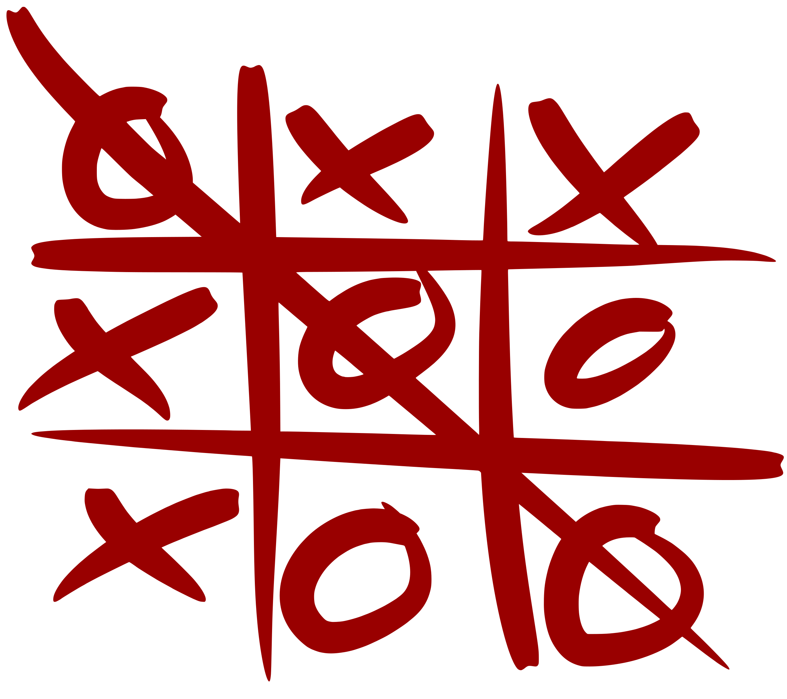

Jami Pekkanen, Juraj Simko et al.
Lecture 2
2021-23-03T10+02
Cyberspace
Try to get a stupid heap of silicon to act like it's smart.
While the heap is stupid, it is huge. CPU billions of transistors, GPU tens of billions, RAM in trillions, SDD has even more.
Human brain has about 100 billion neurons and order of 100 trillion synapses.
Computers catching up brains on hardware, but far behind in software.
Literally incredibly stupid. Very few people believe how stupid they really are. Even after told.
See Feynman's filing cabinet analogue. (Note: starts from a student question!)
Any intelligence in a computer is by chance or from its programmers.
This is actually great. Smart computers would be really annoying!
And definitely too smart for computers!
Computers need every single bit defined exactly. And quite a lot of bits are needed for anything
Bad for intelligence, but great for modeling! Makes it (a bit) harder to fool yourself.
"The first principle is that you must not fool yourself—and you are the easiest person to fool." -Feynman again.
|  | oxx xoo xoo |
211122122 | |
| 1 800 000 bits compressed 123 000 000 bits in memory |
36 000 bits vectorized | 96 bits in UTF-8 (i.e. text) | 9 trits in ternary 18 bits in naive encoding |
Figure out (or find out) the optimal stragegy of tic-tac-toe. Write this as instructions a pre-school child could understand.
Make a list of "things" that a human driver uses in "cruise control" (start with the simple scenario, expand to e.g. curved roads and different vehicles until you run out of paper).
Stay tuned for the first hands-on modeling exercise!